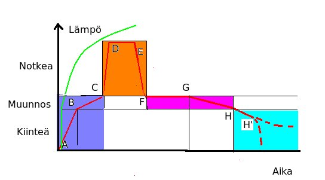

Tässä jaksossa on lasin paistamiseen liittyvää tietoa. Se on paljolti kuivassa taulukoiden muodossa.
Paistaminen -sana kuvaa mielestäniasiaa paremmin kuin keraamikkojen käyttämä polttaminen sana sitä mitä uuunissa tapahtuu. Prosessi muistuttaa aika paljon keittiössä tapahtuvaa: Kuumennetaan uunissa kunnes haluttu tulos on saavutettu.

Kuvassa on yksinkertaistettu paistamisen kulku. Kuva on piirretty ilman asteikkoa, koska
tarkat lämpötilat ovat uunikohtaisia. Suuntaviivat on esitelty jäljempänä.
Nämä asiat on myös esitetty
luettelomuodossa täällä.
Tuon luettelon voi tulostaa työhuoneen seinälle avuksi paisto-ohjelmien suunnitteluun.
Kun lasia kuumennetaan sen viskositeetti laskee, lasi muuttuu notkeammaksi. Vihreä käyrä kuvaa lasin notkeutta. Alussa se on täysin kiinteää muunnosalueelle saakka. Sen jälkeen notkeus kasvaa melko nopeasti lämpötilan myötä.
Olen jakanut kaavion neljään alueeseen, jotka kuvaillaan jatkosivuilla.
Monessakaan kohtaa en ole voinut antaa tarkkoja lukuarvoja. Tämä johtuu siitä että uunit ovat erilaisia. Ohjaysyksikkö mittaa kyllä tarkasti, mutta vain uunin ilman lämpöä yhdestä kohtaa. lasin lämpö poikkeaa tästä yleensä useita asteita. Tarkkuteen pääsee vasta kokemuksen ja uunipäiväkirjojen myötä.